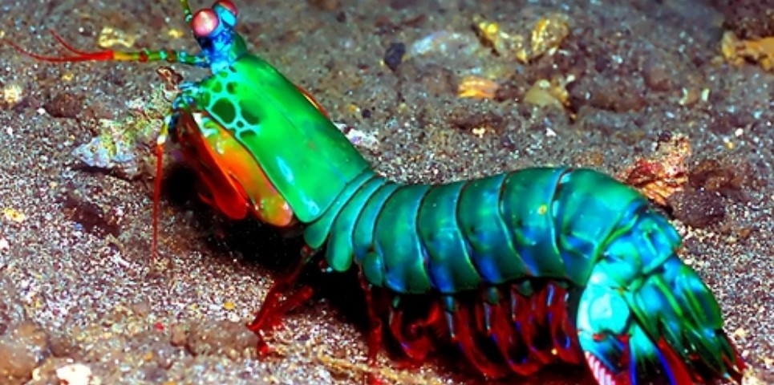
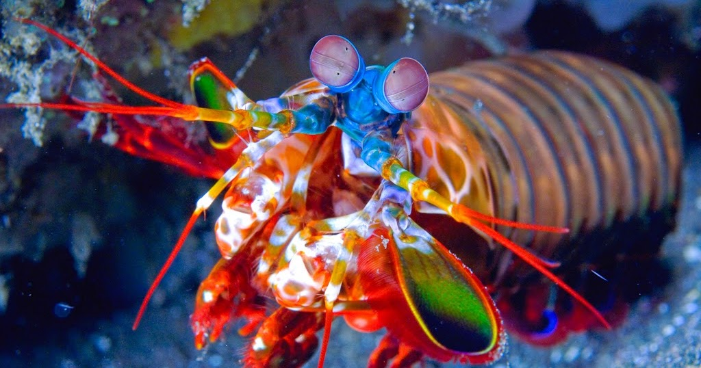
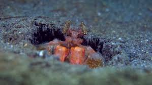

Fatos sobre o Stomatopoda

Informações Gerais
O camarão mantis é o nome dado aos crustáceos marinhos do “Stomatopoda” ordem. Seu nome científico é Odontodactylus scyllarus. A origem desses crustáceos remonta a 400 milhões de anos, tornando-os entre os animais mais antigos do planeta. Os antigos assírios chamavam o camarão mantis "Mar gafanhoto" enquanto seu nome na Austrália moderna é o "Assassino de camarão. " O camarão mantis é uma iguaria em muitos países ao redor do mundo e é preparado fervendo, fritando ou grelhando.
| Classificação Científica | |
|---|---|
| Reino: | Animalia
|
| Filo: | Arthropoda
|
| Subfilo: | Crustacea
|
| Classe: | Malacostraca
|
| Subclasse: | Hoplocarida
|
| Ordem: | Stomatopoda
|
Descrição Física
Camarões mantis adultos geralmente crescem para 3.9 polegadas de comprimento, mas alguns foram observados para atingir cerca de 15 polegadas de comprimento. Um exemplar capturado nos Estados Unidos tinha 18 polegadas de comprimento e e tinha o recorde do maior camarão mantis do mundo. A carapaça do camarão mantis cobre apenas a cabeça e o tórax superior. Os olhos do camarão mantis estão montados em dois talos móveis, permitindo que os olhos se movam de forma independente. Os olhos do crustáceo estão entre os olhos mais complexos de qualquer animal, com o camarão tendo a capacidade de discernir imagens multiespectrais e luz polarizada. Diferentes espécies de camarão mantis têm coloração corporal diferente, e alguns, como o camarão pavão, têm corpos elaboradamente coloridos.
Comportamento
O camarão mantis passa muitas horas escondido em tocas ou formações rochosas no fundo do mar. A hora do dia em que o camarão mantis é mais ativo depende da espécie. Um predador feroz, o camarão mantis, é um pesadelo para muitos pequenos animais em seus habitats. O comportamento do camarão mantis de perseguir e matar ativamente as presas não é característico dos crustáceos. Algumas espécies de camarão têm apêndices frontais que evoluíram para formar estruturas semelhantes a um taco que os crustáceos usam para matar suas presas martelando ou socando. Os apêndices também vêm a calhar em confrontos violentos entre indivíduos para companheiros e territórios. Os cientistas descobriram que entre os Camarões, o Louva-a-deus pode lançar o mais poderoso e mais rápido golpe na natureza. Eles atacam com a força de uma bala de arma quebrando conchas e até mesmo copos de aquário. À medida que os membros se desenrolam, eles aceleram a 10,000 vezes mais do que a gravidade e a velocidade máxima atinge 50 milhas por hora, essas festas são surpreendentes devido à resistência da água. Tais conquistas fazem do camarão mantis o animal com o movimento de membros mais rápido do mundo. O soco atinge seu alvo em 3,000th de um segundo.
Habitat e Gama
O crustáceo é predominantemente encontrado em habitats marinhos tropicais e subtropicais. No entanto, algumas espécies também são encontradas em habitats marinhos temperados. Camarões marinhos habitam as águas dos oceanos Pacífico e Índico, com grandes concentrações sendo encontradas na costa leste da África e no Havaí.
